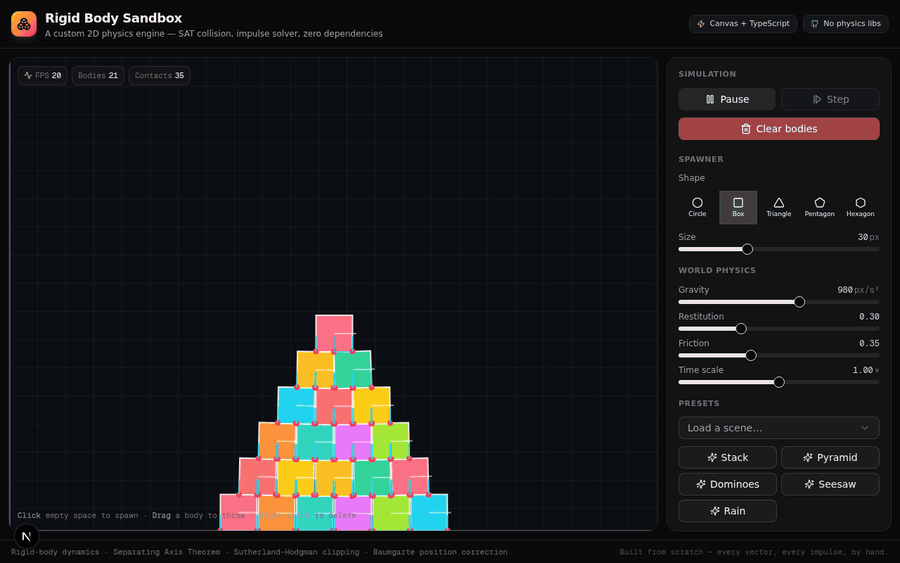
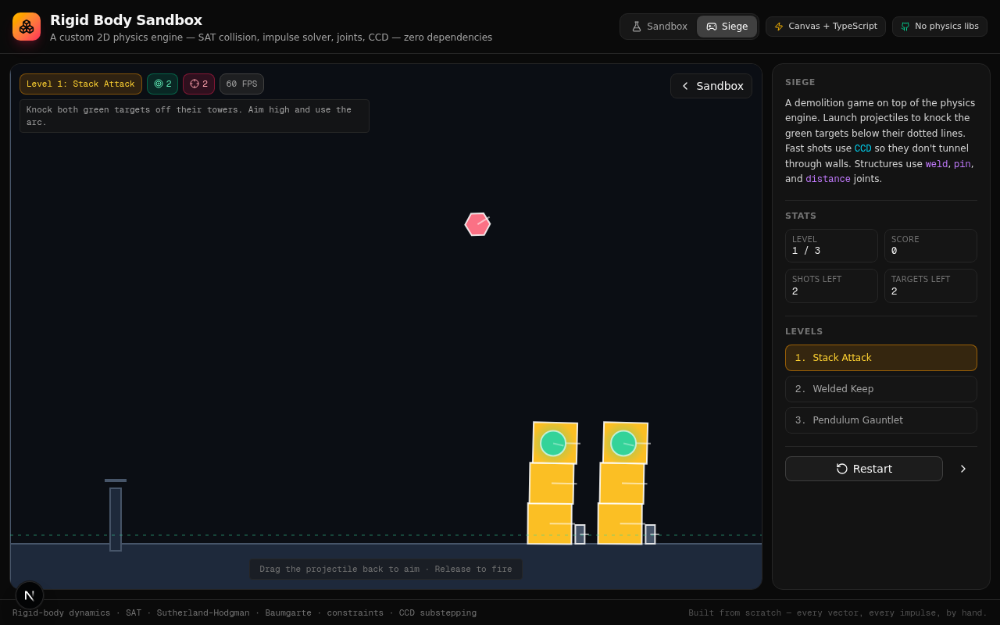

A custom 2D physics engine — SAT collision detection, impulse-based resolution, friction & restitution, Baumgarte stabilization. Every vector, every impulse, implemented by hand in TypeScript.

Anyone can paste the gravity formula. Gluing it into a stable loop where stacks don't jitter or fall through the floor — that's the craft.
Polygon-vs-polygon uses the full Separating Axis Theorem with Sutherland-Hodgman clipping, producing up to 2 contact points per manifold — what makes stacks stable.
Sequential impulses with restitution + Coulomb friction cones. N iterations per step converge to a consistent solution for resting stacks.
A full constraint solver with distance, pin (hinge), weld, and motor joints. Warm starting + Baumgarte position correction — the same framework Box2D uses.
Continuous collision detection substeps fast-moving bodies (up to 8×) so projectiles don't tunnel through thin walls. No more "the bullet skipped the floor."
Mouse grab & throw, spawn-on-click, right-click delete, live sliders, and 7 presets — including a hanging chain and a motorized spinner.
A slingshot demolition game on top of the engine — 3 levels with welded fortresses, hanging chains, and pendulum obstacles. Every feature, working together.
One fixed step (1/60s), decoupled from the render loop via an accumulator for determinism.
Gravity + accumulated forces → velocity. angularVelocity += torque × invInertia × dt
Recompute world vertices, normals, and AABBs from position + angle.
O(n²) AABB overlap pairs — cheap rejection before the expensive SAT tests.
Build manifolds: Circle-Circle, Circle-Polygon (Voronoi), Polygon-Polygon (SAT + clip).
iterations passes of sequential impulse — normal (restitution) + tangential (friction).
position += velocity × dt, angle += angularVelocity × dt.
Baumgarte stabilization pushes penetrating bodies apart along the contact normal.
If the solver blew up, freeze that body instead of poisoning the whole world.
Why end-to-end verification beats "it compiles".
The math was public knowledge. The transcription error wasn't.
Read the full implementation →
The engine isn't just a tech demo — there's a demolition game built on top of it.

Siege — drag the slingshot back, release to fire. Knock the glowing targets off their structures to win. Fast projectiles use CCD so they don't tunnel through walls; the structures use welds, pins, distance joints, and a motor. Three levels, scoring, the works.
Play it on GitHubBuilding a physics engine from scratch — and the one-character bug that almost shipped.